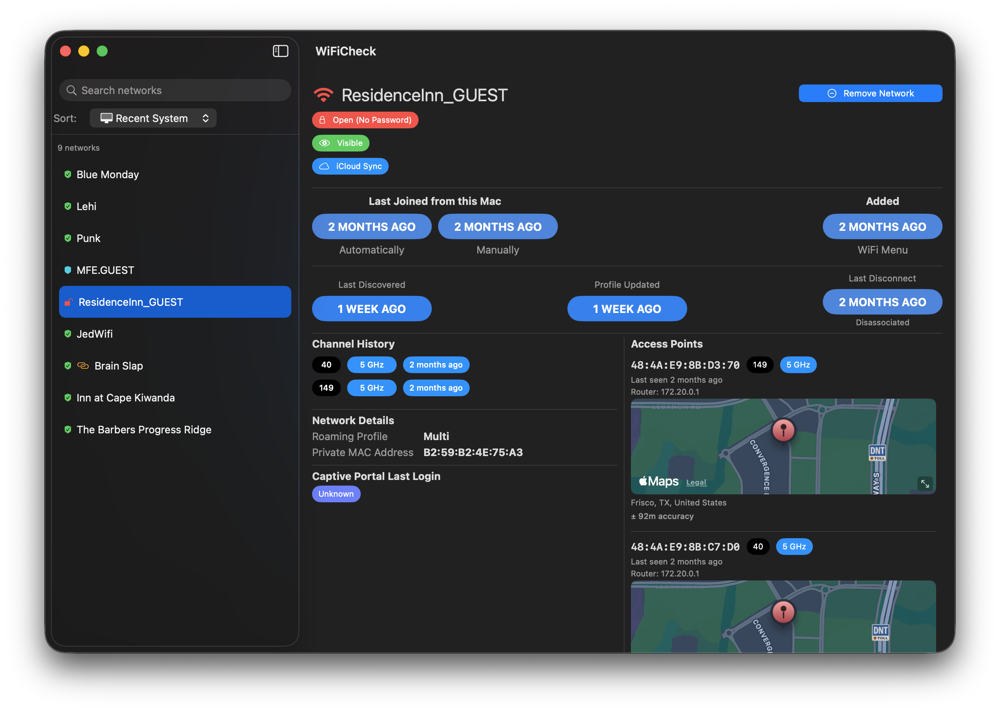

WiFi Check is a simple app that displays information about the WiFi connections made from your Mac. Recent versions of macOS have changed the way this information is stored, so I updated the app to work with macOS 26. Enjoy!

What it shows
SSID, security, connection timestamps, access points, channel history, collocated networks, and the password from Keychain when you ask for it.
Two ways to read it
Install the privileged helper for live system data, or copy the plist somewhere the app can open. Forget removes a network from history, the preferred list, and the saved password.
Should I trust an app I download from the internet?
You should be skeptical of anything you download from some relatively unknown location. The app has been notarized by Apple — which is not a guarantee that it is "safe", but it means at least Apple has run it through whatever "app checker" they have and didn't create any red flags. The source is available on GitHub if you'd like to inspect it yourself.
Yeah, I'm not giving some random app I download full disk access and elevated privileges.
Smart! I wouldn't trust any app I just downloaded either. Hence, the option to "try it out" by copying the required file to a location the app can read from.
Woah! You also want a password to show me my WiFi password?
Yes. However, if you want to find this information yourself, this can also be found by opening the Keychain Access app from your /Applications/Utilities folder, searching for your WiFi network name, selecting the item in the list, clicking on the "Show password" checkbox... Anyway, this was more of convenience, and it uses the Apple supplied Keychain APIs, so up to you.
What does "Forget Network" actually do? Will this delete my WiFi?
No. Forget removes the WiFi entry from com.apple.wifi.known-networks.plist (via the privileged helper), from the preferred-network list, and from the saved AirPort keychain password. You will have to rejoin that WiFi just like you did the first time.
You can also remove old WiFi connections outside the context of the app. If you go into your System Settings, select Wi-Fi, then scroll to the bottom and click Advanced... you'll see a list of "Known Networks". This should be the same list you see in the WiFi Check app.
What exactly is the purpose of this app?
¯\_(ツ)_/¯
I was curious about the information stored in the /Library/Preferences/com.apple.wifi.known-networks.plist file and wrote an app to display it. I've found it useful to see what networks my Mac remembers and to remove networks I no longer use.
What version of macOS do I need?
macOS 26 or later. Recent versions of macOS changed how this information is stored, and the app is written for that.